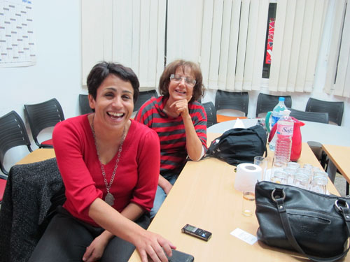

پذيرش > تریبون > گفت و گو > گفتگو با اعضای سازمان دمکراتیک زنان تونس، برنده ی جایزه ی 2011 بنیاد سیمون دوبوار:اگر (...)


 گفتگو با اعضای سازمان دمکراتیک زنان تونس، برنده ی جایزه ی 2011 بنیاد سیمون دوبوار:اگر آنها برنده شوند از ما انتقام خواهند گرفت! گفتگو با اعضای سازمان دمکراتیک زنان تونس، برنده ی جایزه ی 2011 بنیاد سیمون دوبوار:اگر آنها برنده شوند از ما انتقام خواهند گرفت!
12 دی 1390 - - نسخه قابل چاپ
تغییر برای برابری/ شعله ایرانی:"حتی اگر شکست بخوریم، به آسانی و بدون نبرد نخواهد بود. سازمان های زنان تونس قوی هستند و سازمان یافته. البته که همه نگران از دست دادن حقوق برابر زنان هستیم و اگر موفق نشویم که قانون اساسی جدید سکولار و حافظ حقوق برابر زنان را به پارلمان تحمیل کنیم، روزهای سختی را در پیش رو خواهیم داشت. برای همین هم هست که در این نبرد سخت بیش از هر چیز، به حمایت بین المللی سازمان های زنان نیازمندیم."

این سخنان احلام بالحاج رییس هیات مدیره و سخنگوی سازمان دمکراتیک زنان تونس است. سازمانی که یک ماه پس از این گفتگو، برنده ی جایزه ی امسال بنیاد سیمون دوبوار شد. یک روز پس از تظاهراتی بزرگ در روز گشایش پارلمان جدید تونس در 22 نوامبر، در دفتر سازمان دمکراتیک زنان در شهر تونس نشسته ایم و در مورد مسائل زنان با اعضای هیات مدیره گفتگو می کنیم. احلام بالحاج که به تازه گی به ریاست هیات مدیره ی سازمان انتخاب شده یکی از شخصیت های شناخته شده و مورد احترام مردم تونس و نامی شناخته شده در عرصه ی بین المللی است. او که از مبارزان چپ و فمینیست علیه نظام دیکتاتوری بن علی است بارها در دوران بن علی دستگیر و حبس شده است. اکثر سازمان های زنان در کشور تونس با دخالت، تحت نظارت و با کمک های دولتی ایجاد می شدند و فعالیت می کردند. آنها عمومن وابسته به ارگان های حزب حاکم بودند. سازمان دمکراتیک زنان تونس یکی از معدود سازمان های زنان تونس است که از سال 1989 با برنامه ایی فمینیستی در عرصه های دفاع از حقوق زنان، مبارزه علیه خشونت و دفاع از حقوق همجنسگرایان، مقابله با فرهنگ پدرسالارانه و برای افزایش مشارکت سیاسی و اجتماعی زنان در جامعه، مستقل از دولت و در مخالفت با سیاست های دیکتاتور سرنگون شده فعالیت می کرد. به همین جهت این سازمان همواره به عنوان یکی از خوشنام ترین سازمان های مدنی تونس شناخته می شد. سازمان دمکراتیک زنان در انقلاب تونس که اکنون اولین سالگرد آنرا پشت سر گذاشتیم، همراه مردم و اعضایش از پیشروان تظاهرات ها بودند. در روز گشایش پارلمان جدید تونس که نوعی مجلس موسسان است، از احلام بالحاج برای شرکت در مراسم افتتاح به مجلس دعوت شده بود. از او پرسیدم چه احساسی داشت.
با خنده ایی تلخ تعریف می کند که حس خوبی نداشته و آنچه دیده نگرانش کرده است.
 من بیست سالی است که در اپوزیسیون علیه حکومت بن علی فعال بوده ام و تقریبن از دوره دانشجویی اکثر کسانی را که به هر نوعی مخالف بودند، می شناسم. دیروز در مجلس جدید تعداد کمی را بازشناختم. اکثر کسانی که به عنوان کاندیداهای احزاب، از جمله حزب اسلامگرای النهضه صاحب کرسی شده اند را هرگز در هیچکدام از برنامه ها و مبارزات اپوزیسیون ندیده بودم. زنان نماینده تقریبن هیچکدام سابقه ی فعالیت در جنبش زنان ندارند. من بیست سالی است که در اپوزیسیون علیه حکومت بن علی فعال بوده ام و تقریبن از دوره دانشجویی اکثر کسانی را که به هر نوعی مخالف بودند، می شناسم. دیروز در مجلس جدید تعداد کمی را بازشناختم. اکثر کسانی که به عنوان کاندیداهای احزاب، از جمله حزب اسلامگرای النهضه صاحب کرسی شده اند را هرگز در هیچکدام از برنامه ها و مبارزات اپوزیسیون ندیده بودم. زنان نماینده تقریبن هیچکدام سابقه ی فعالیت در جنبش زنان ندارند.

آیا نگران تونس هستی؟ بالحاج پاسخ می دهد:
خیلی نگرانم. ما به یمن انقلاب بسیاری حقوق جمعی مان را حفظ خواهیم کرد. نگرانی ام بیشتر متوجه ی از دست دادن حقوق و آزادی های فردی است. نگران وخامت اوضاع اقتصادی که بیشتر از همه دامن زنان را می گیرد هم هستم. رشد بیکاری و افزایش روزانه قیمت مواد غذایی بیش از همه زنان را تحت فشار خواهد گذاشت.
سعاد راصب از اعضای هیات مدیره و استاد دانشگاه، هم می گوید که اوضاع نگران کننده است و اسلامگرایان تمام تلاششان را خواهند کرد که قوانین مربوط به حقوق زنان را تقلیل دهند و قانون اساسی را بر اساس احکام شریعت تنظیم کنند. او از جمله به تشدید فعالیت بنیادگرایان در مدارس و دانشگاه ها علیه معلمها و استادان زن و در شهرهای کوچک علیه زنان بی حجاب اشاره می کند.
بالحاج اضافه می کند که اسلامگرایان می دانند که جامعه ی تونس به آسانی تن به حکومت مذهبی نمی دهد و فکر نمی کند که آنها اول از همه سراغ قانون چند همسری و یا حجاب اجباری بروند اما سعی خواهند کرد که مبانی قانونی را طوری تنظیم کنند که در دوره های آتی بتوانند به مرور قوانین را تغییر دهند.
از بالحاج می پرسم که الویت امروز سازمان دمکراتیک زنان چیست؟
ما باید همه ی نیرویمان را برای تصویب یک قانون اساسی دمکراتیک و سکولار بسیج کنیم و مردم را برای رای دادن به نمایندگان واقعی شان در دور آینده ی انتخابات آگاه کنیم. این الویت مبارزات ما در سالی که در پیش رو داریم هست. باید تلاش کنیم که قوانین بهتری در زمینه ی خشونت علیه زنان تصویب شود و قوانین حافظ حقوق فردی و آزادی ها در قانون جدید گنجانده شود. ما باید به خواست های انقلاب تونس برای آزادی و عدالت اجتماعی و وفادار بمانیم. باید مردم و به ویژه زنان را برای فشار آوردن به کسانی که برای نوشتن قانون اساسی جدید انتخاب شده اند سازماندهی کنیم. از یک سو با تشکیل جلسات و لابی گری و از سوی دیگر در ائتلاف با دیگر سازمان های زنان و احزاب سیاسی موافق، با سازماندهی از پایین و بیرون از مجلس. کاری که ما از همین حالا شروع کرده ایم. مثلن ما نمایندگان زن احزاب مختلف را به یک جلسه مشورتی دعوت کردیم. حتی از اعضای زن حزب النهضه هم دعوت کردیم که متاسفانه برخورد بسیار ناهنجار و تهدید آمیزی داشتند.
سازمان دمکراتیک زنان از سازمانگران اصلی تظاهرات های متعدد مقابل مجلس جدید بوده است. خواست های تظاهرکنندگان حول آزادی های سیاسی و اجتماعی، خواست عدالت اجتماعی و برابر حقوقی زنان، تصویب قوانین سکولار، مخالفت با دخالت دولت های بیگانه از جمله اسراییل، فرانسه، قطر و آمریکا در امور داخلی تونس... متمرکز است.
سازمان ها و احزاب اسلامگرا در کشورهای عربی از شیوه ی کمک رسانی مستقیم و ارائه خدمات اجتماعی به منظور کسب نفوذ، اعتبار و اعتماد در میان مردم استفاده می کنند. ایجاد مراکز درمانی مجانی و یا ارزان، مدرسه، تاسیسات ورزشی برای جوانان و خدمات مشابه. چرا شما از این شیوه ها برای نزدیک تر شده به مردم استفاده نکردید؟ بالحاج پاسخ می دهد.
یک دلیلش این است که در دوران بن علی چنین اقداماتی فقط برای اسلامگرا ها که با استفاده از مراکز مذهبی و یا تحت عنوان امور خیریه خود را سازماندهی می کردند امکان پذیر بود. برای دیگران چنین کارهایی و نزدیک شدن به مردم تقریبن جرم بود و دردسرساز. امثال من در دوره ی بن علی برای هر قدمی که بر می داشتیم تحت فشار بودیم. اما حالا با شرایط جدید و پس از انقلاب، همه ی ما داریم روی این موضوع فکر می کنیم تا شیوه های کارمان را با شرایط تطبیق دهیم و با رویکرد به یاری رسانی به مردم برای حل مشکلات اجتماعی و اقتصادی شان با اسلامگراها رقابت کنیم. بنیادگراها روی مشکلات روزمره ی اقتصادی و اجتماعی مردم فوکوس می کنند و به آنها کمک های عینی می رسانند و این رمز موفقیت آنهاست. اساسن بخش سکولار اپوزیسیون معتقد است که مشکلات را باید از ریشه خشکاند و باید برای تغییر نظام سیاسی و اجتماعی بر سیاستمداران فشار آورد تا جامعه در کلیتش به رفاه دست یابد. با توجه به شرایط ویژه شاید ما باید در کنار این بخش از مبارزه که اساسی است، روی یاری رسانی مستقیم به مردم هم کار کنیم.
هم بالحاج و هم فعال کهنه کار جنبش زنان راصب، اعتراف می کنند که جنبش زنان از امکانات اندکی برای سازماندهی این قبیل فعالیت ها برخوردار است. راصب که روانشناس است و بیشتر با مسائل خشونت علیه زنان و کودکان کار می کند می گوید:
مثلن ما بیست سال است که داریم با حداقل امکانات و با مشکلاتی که رژیم بن علی برایمان می تراشید، به زنان مورد خشونت قرار گرفته کمک می کنیم. اما نتوانسته ایم حتی یک خانه ی امن برای این کار تهیه کنیم و مجبوریم زنان مورد تهدید قرار گرفته را مثلن به هتل بفرستیم. اگر می توانستیم در مناطق مختلف خانه های امن زنان ایجاد کنیم حتمن می توانستیم به شکل دیگری با همه ی اقشار زنان ارتباط برقرار کنیم. ما از منابع مالی که بنیادگرایان برخورداند بی بهره ایم.
هنگام خداحافظی از احلام بالحاج با یادآوری سرنوشت فعالین جنبش زنان ایرانی پرسیدم که آیا نگران امنیت خودش و فعالین جنبش زنان نیست، آیا مورد آزار و اذیت قرار نگرفته اند.
اوضاع برای فعالین فمینیست پرخطر شده است. همین الان شروع کرده اند به تهدید ما. ما را فواحش می خوانند. می دانند که زنان آگاه، قوی ترین اپوزیسیون در مقابل قدرت گیری بنیادگرایان هستند. اگر افراطیون مذهبی در دور آینده ی انتخابات برنده شوند و حاکمیت شان را تثبیت کنند حتمن از ما انتقام خواهند گرفت! همان طور که از شما زنان ایرانی گرفتند.
احلام بالحاج و سعاد راصب به اتفاق دیگر اعضای هیات مدیره ی سازمان دمکراتیک زنان تونس به داخل اتاق کنفرانس دفتر سازمان بر می گردند تا اجلاس هفتگی شان را برای بررسی فعالیت ها و برنامه ریزی های آینده برگزار کنند.
ارسال به
بالاترین
،
توییتر
،
فریندفید
،
فیسبوک
در همين بخش :
 دهمین دورۀ مراسم تندیس صدیقه دولت آبادی ۱۳۹۲ دهمین دورۀ مراسم تندیس صدیقه دولت آبادی ۱۳۹۲
کارت پستالهایی به بهانهی هشت مارس و به یاد همهی مبارزین راه برابری
بیانیه بیش از 350 تن از مدافعان حقوق زنان به مناسبت روز جهانی زن؛ زنان هر روز فرودستتر میشوند
لباسی که برای تن ما دوخته اند! /اعظم بهرامی
چالشها و چشمانداز فعالیت مدنی زنان
ديگر بخش ها :
طرح یک میلیون امضا
|
مقالات
|
سایت نوشته ها
|
اخبار
|
گزارش كمپين
|
گفت و گو
|
علیه سکوت
|
كوچه به كوچه
|
نامه های شما
|
گزارش ویژه
|
گفتگو با اعضا
|
ویژه سالگرد کمپین
|
تصویر برابری
|
دل آرام علی
|
تریبون
|
مقالات
|
تاریخ شفاهی
|
خارج از چارچوب
|
کتابخانه
|
درباره کمپین
|
کمپین در شهرها
|
کمپین در بند
|
صدای تغییر
|
ویژه 22 خرداد
|
لایحه حمایت از خانواده
|
گالری
|
عشا مومنی
|
امیر یعقوبعلی
|
خدیجه مقدم
|
راحله عسگری زاده و نسیم خسروی
|
پروین اردلان،جلوه جواهری، مریم حسین خواه، ناهید کشاورز
|
زینب پیغمبرزاده
|
سعیده امین، سارا ایمانیان، محبوبه حسین زاده، ناهید کشاورز و همایون نامی
|
احترام شادفر
|
نسیم سرابندی زاده،فاطمه دهدشتی
|
وبلاگ مهمان
|
پرونده خرم آباد
|
دستگیری ها
|
مریم مالک
|
پرستو اللهیاری
|
مهرنوش اعتمادی
|
سمیه رشیدی
|
Other Languages
|
همراهان
|
«فراخوان کمپین ده روز با بهاره هدایت»
| English
|